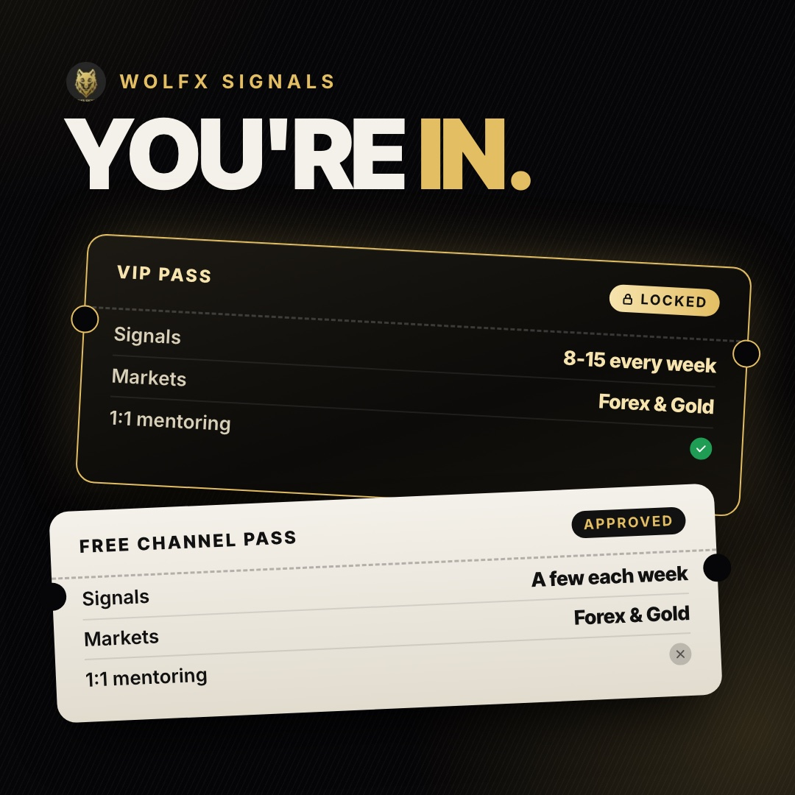
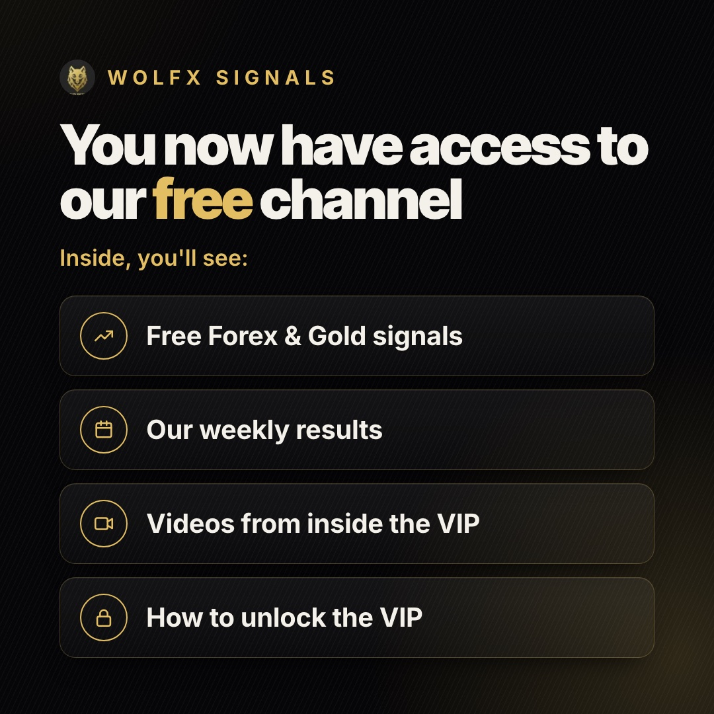
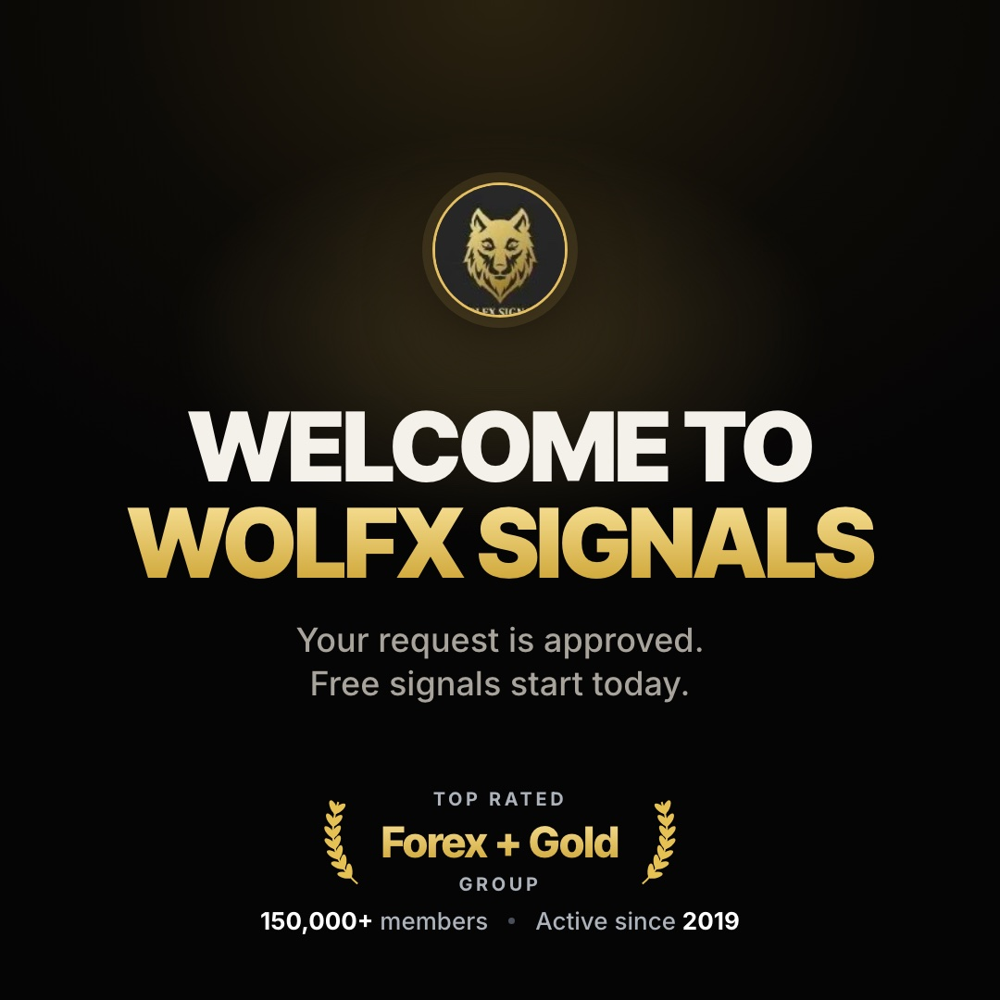

Imagen de bienvenida del canal free
La que recibe cada persona al ser aceptada, con los botones «✅ Open Free Channel» y «🔒 Check VIP Plans». Origen: commit 26e73094.

A · Pases: el VIP bloqueado sobre el free aprobado (como BestChamp)

B · Lista: qué hay dentro (como la de CopyTrading)

C · Sello: bienvenida con el logo y «Top rated»